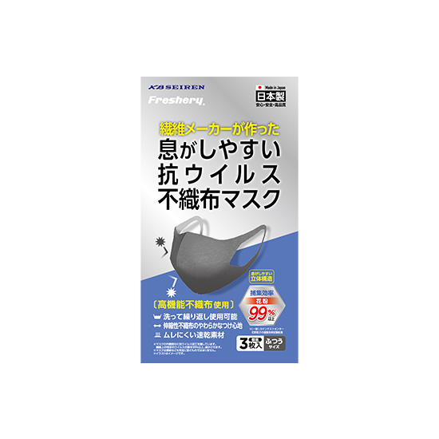
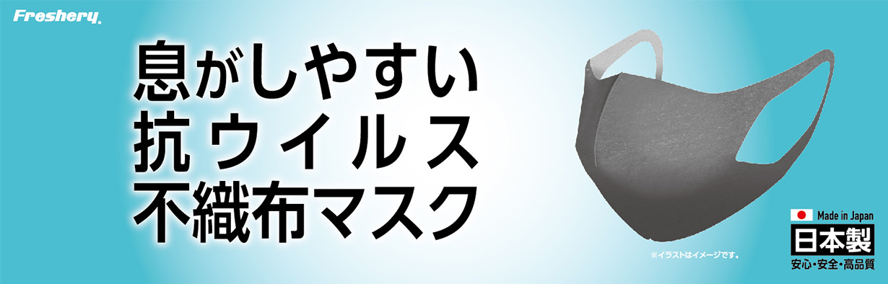
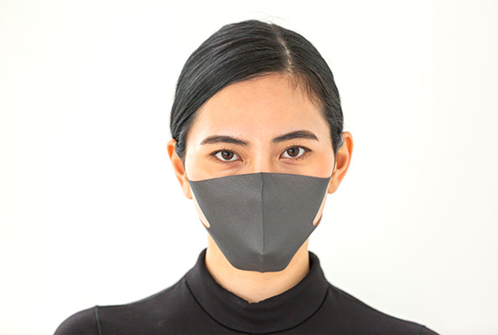
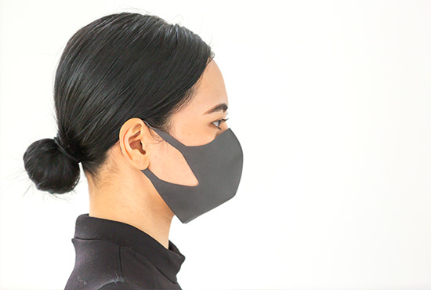
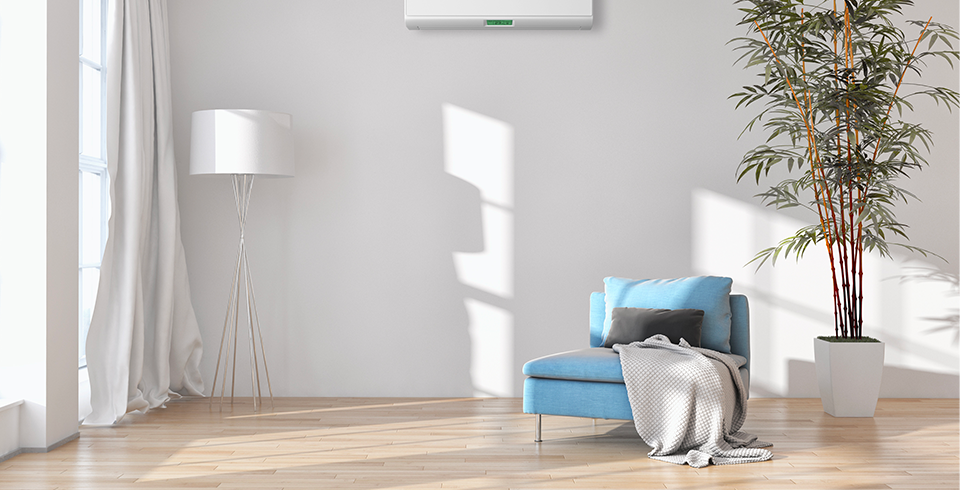
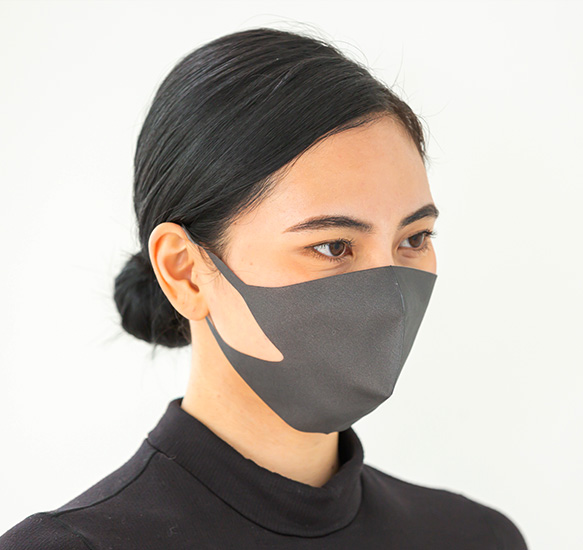
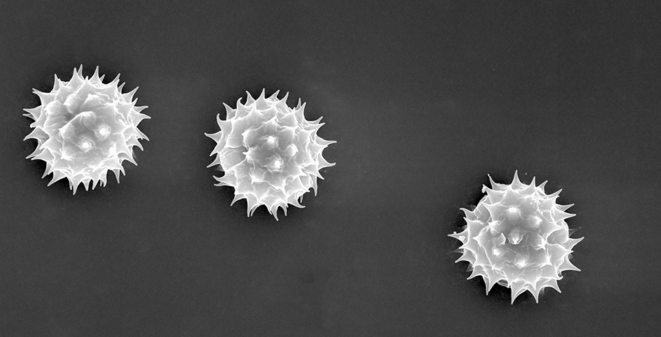
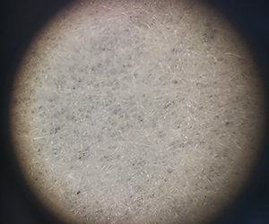
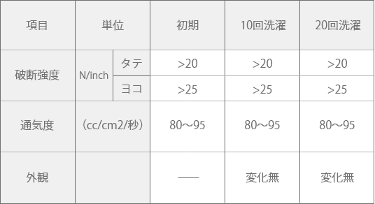

普通サイズ JAN:4560274454078
【普通】約190×140×厚さ0.3mm 3g/枚
3枚入（個装）

糸メーカーが、着ける人の気持ちに寄り添って本気で考えました。
素材は全方位約400％の伸縮性を持った超極細繊維のポリウレタン。
顔の形に沿って伸縮し、抜群のフィット感を実現しました。
極細繊維ならではの、ソフトで優しい肌ざわり。
花粉ろ過率99%以上の効果を持った、通気性抜群でムレにくく呼吸しやすい
新感覚のマスクです。
POINT01
マスク外側部分に付着したウイルスを99%以上不活化(※)
※全てのウイルスで検証されているものではありません。
マスクは感染を完全に防ぐものではありません。
POINT02
一般不織布マスクの2倍の通気性。
立体形状で口に貼りつかず、喉の乾燥を防ぎます。
下部から蒸気を噴出 ⇒ マスクを被せ、どれだけ蒸気が通過するかを検証
■蒸気による通気性比較実験
社内実験にて


立体形状で口に貼り付きません
POINT03
熱伝導率が高く、気温・室温上昇時にもピッタリ。
内気と外気をしっかりと交換して長時間着用していてもマスク内温度が上昇しにくく蒸れにくく出来ています。

40代男性 新商品マスク着用での呼吸時のマスク内温度変化
一般不織布マスク
新商品マスク
20代女性 新商品マスク着用での呼吸時のマスク内温度変化
一般不織布マスク
新商品マスク
■ サーモグラフィ測定によるマスク内温度比較実験
マスクを着用して1階から3階まで階段を駆け足で昇り降りした直後の呼吸状態を確認。吸い込み時は温度が下がり、吐き出し時には温度が上がる。その差を測定。
POINT04
マスクの素材であるエスパンシオーネ®は約400%の伸縮性！
厚みも0.3mmと薄く通常のゴム紐よりも耳への負担を軽減します。また、すき間を作らずにピッタリとフィットするので飛沫もブロック。素材もシルキーで肌に優しい仕様です。
※マスクは感染などを完全に防ぐものではありません。
360°全方向に伸長

耳部分も適度な太さ
POINT05
特殊素材エスパンシオーネ®が、細く・緻密に進化。
布マスクに近い肌触りでありながら、本来の不織布特有のフィルター性能を保有。花粉ろ過効率は99%以上を実現。
※（一財）カケンテストセンター調べ 花粉粒子の捕集効率テスト

従来品エスパンシオーネ®

繊維が50%細く高密度に進化
マスク用エスパンシオーネ®

POINT06
20回使用の場合約10円/回で経済的です。しかも薄く乾き易い素材です。
※ポリウレタンの特性上、開封後に黄変することがありますが性能に影響はありません。

洗濯耐久性試験結果

（社内調べ）
乾燥スピード

洗濯後、どのくらいの時間で水分量が１％未満になるか測定。
新商品マスクは約３０分で１％未満に。（社内調べ）
 Contact
Contact